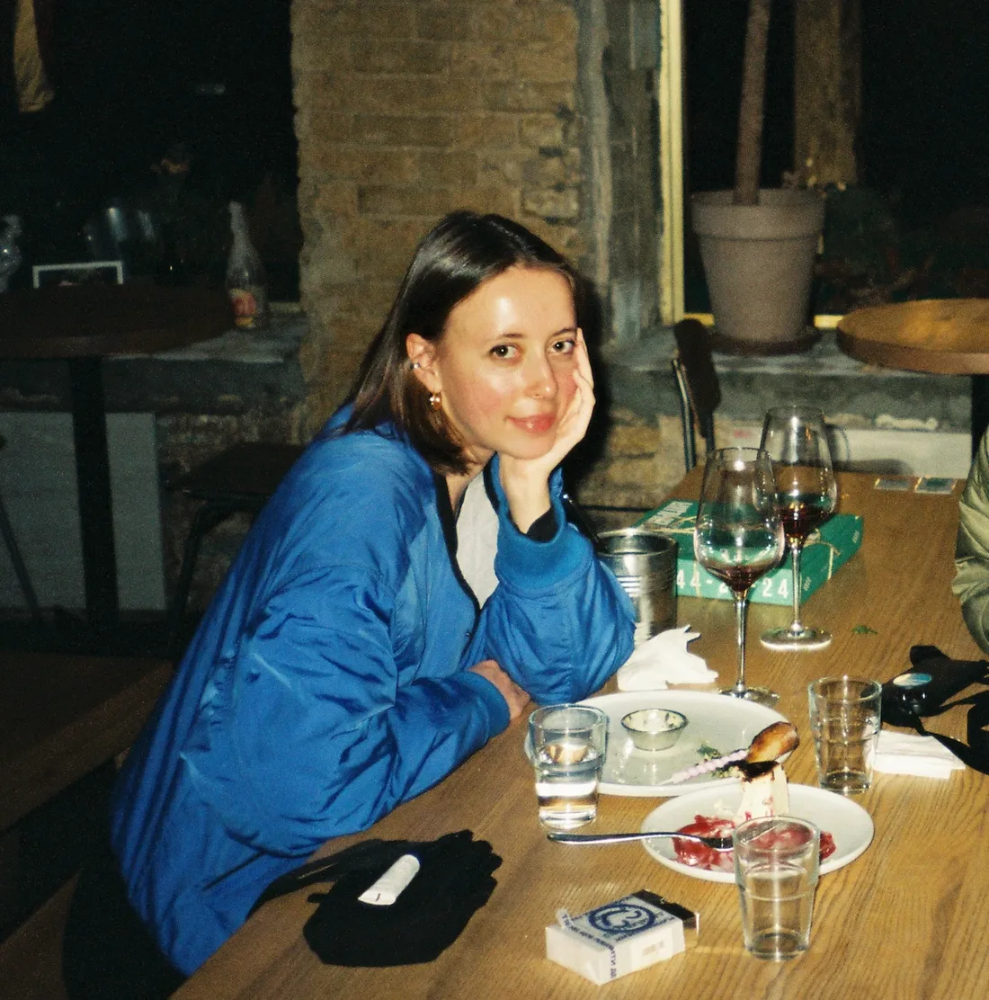

Бюро ритуальних послуг третьої хвилі
Агенція, яка створює трансцендентний, красивий і не пошлий досвід прощання.
Я — Саша. Проєктую та курую дизайн, сайти, ідеї — від додатків для освітніх систем до лендингів для українського уряду.

Я люблю ідеї, бо вони глибокі, бо вони нові, бо вони прояснюють, бо вони суперечливі, бо вони дивні
Агенція, яка створює трансцендентний, красивий і не пошлий досвід прощання.
Спеціальні клініки для народження дітей, які дають незвичний і красивий досвід народження.
З великою секцією класних і рідкісних дитячих книг та ігор з усього світу. Такий Cabinet of Child's Curiosity. Можна лишити дитину на кілька годин.
Перекладає українською ключові тексти з теорії кібернетики та теорії систем, а також з історії й філософії технологій, інтернету та науки.
Набори для дітей і дорослих, з яких можна зібрати телевізор, телефон, камеру — і зрозуміти, як влаштовані речі. Дуже красиві, в стилі Apple, з поясненнями механіки, ланцюжків виробництва та історії приладу.